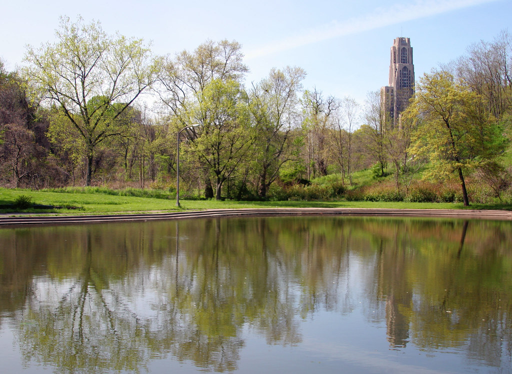

Schenley Park
Located in Pittsburgh's Oakland neighborhood, Schenley Park provides 456 acres of greenspace in the middle of the city. The park's proximity to the University of Pittsburgh and Carnegie Mellon University's campuses makes it an ideal spot for students to take a break from the busy city life, exercise, and enjoy nature.
Visitors to Schenley Park can walk, run, or bike the miles of trails, visit Phipps Conservatory and Botanical Gardens, golf at the Bob O'Connor Golf Course, swim at the pool in the summer or, in the winter, skate at the Schenley Park ice rink, and more!
Schenley Park also holds many events throughout the year including Pittsburgh's Race for the Cure and the Vintage Grand Prix.
See all that Schenley Park has to offer at their website: Schenley Park.